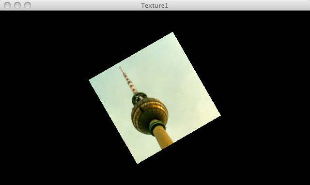

This page demonstrates PJS textures

// Demo from Processing.org
/**
* Texture 1.
*
* Load an image and draw it onto a quad. The texture() function sets
* the texture image. The vertex() function maps the image to the geometry.
*/
PImage img;
void setup() {
size(640, 360, P3D);
img = loadImage("berlin.jpg");
noStroke();
}
void draw() {
background(0);
translate(width / 2, height / 2, 0);
rotateY(map(mouseX, 0, width, -PI, PI));
rotateZ(PI/6);
beginShape();
texture(img);
vertex(-100, -100, 0, 0, 0);
vertex(100, -100, 0, 400, 0);
vertex(100, 100, 0, 400, 400);
vertex(-100, 100, 0, 0, 400);
endShape();
}